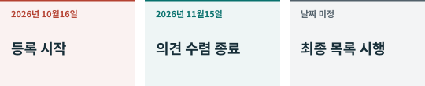

01. 무엇이 언제 바뀌었나¶
한 공고, 두 시간표¶

상무부와 과학기술부는 2026년 10월 16일 제48호 공고를 발표했습니다. 한 부분은 수출 금지·제한 기술 목록 개정안이고 다른 부분은 즉시 시행하는 임시 사전 등록입니다. 등록이 시작됐다고 새 금지·제한안이 모두 확정된 것은 아닙니다. CN48
의견 수렴은 10월 16일부터 11월 15일까지입니다. 임시 등록은 개정 목록이 정식 공표·시행될 때까지이며 고정 종료일은 없습니다. 이 판에서 확인한 자료에서는 이 초안을 대체하는 확정 목록을 찾지 못했습니다. 후속 공고가 상황을 바꿀 수 있습니다. CN48
어떤 이전을 살펴보나¶
해외 소유권 이전, 국내 기술의 해외 이용 허락, 국내 기술 소유자나 실질 지배자가 해외 주체로 바뀌는 경우를 포함합니다. 상무부가 추가로 알리는 경우와 미완료 수출도 들어갑니다. 물건이 국경을 넘지 않아도 기업 거래가 관련될 수 있다는 것은 지배권 조항에서 도출한 우리의 해석입니다. CN48, 제3부
ecomp.mofcom.gov.cn의 기술 무역 신청에서 수출자, 수령자, 국가·지역, 기술, 용도, 예상 금액을 등록합니다. 한 번에 같은 수령자에게 여러 기술을 보내면 합칠 수 있고 다른 경우는 원칙적으로 나눕니다. 등록은 수출 허가 자체가 아닙니다. CN48 CN-A2
금지는 해당 범위의 수출을 막고, 제한은 허가 경로를 둡니다. 자동 허가에도 절차가 있습니다. 제외는 특정 범위에서 빼는 것입니다. 제목보다 조건을 먼저 읽어야 합니다. CN-A1
예를 들어 11월에 비공개 모델 기술을 해외에 허락한다면 현재 등록과 기존 법률을 확인합니다. 의견 수렴 종료까지 기다리는 것만으로 충분하지 않지만, 초안만 보고 모든 거래가 이미 금지됐다고 해도 안 됩니다. 거래 승인 사례가 아닙니다.